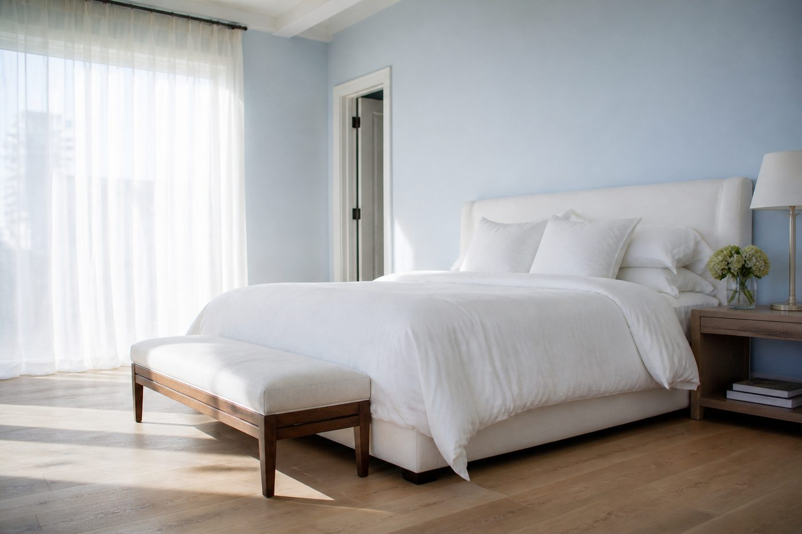
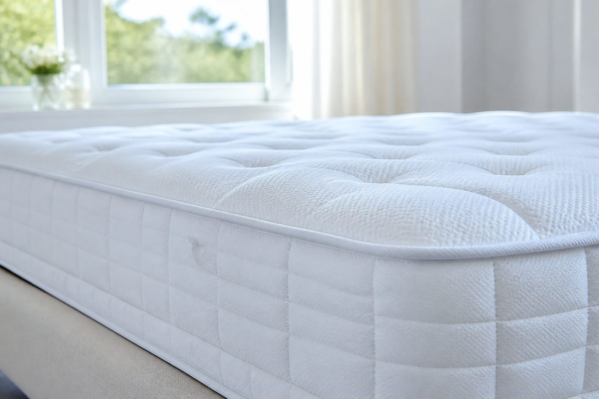
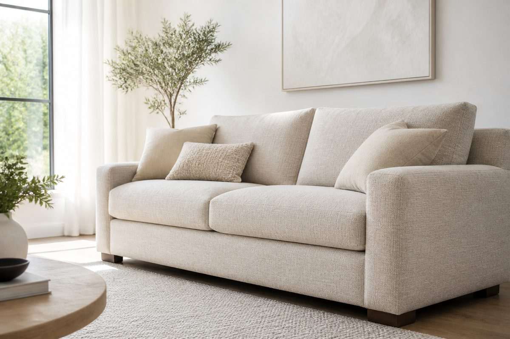
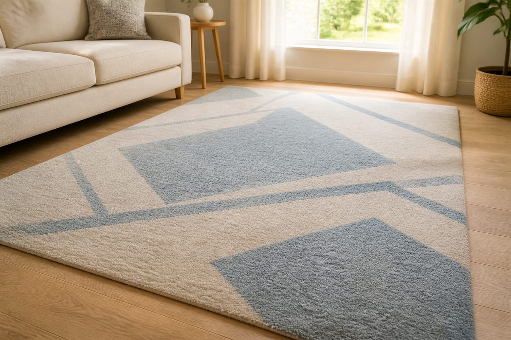

KARCHER 전문 장비
독일 카처 건·습식 세탁 장비로 섬유 깊숙이 쌓인 미세먼지와 각질을 흡입하고, 세척한 오염과 물기를 강하게 회수합니다.
같은 소파도 부클·린넨·벨벳·천연가죽은 세제도, 도구도, 건조 방식도 다릅니다. 소재를 먼저 확인하고 그 소재에 맞는 방법으로 건식·습식·살균까지 케어합니다.
가구 사진 한 장이면 소재와 오염도를 확인해 견적을 안내드립니다.

침실 · 거실 가구 케어매일 몸이 닿는 가구에는 각질·먼지·땀과 음식물 얼룩이 쌓입니다. 클린수피아 광명점은 장비·세제·마무리 세 가지를 함께 봅니다.
독일 카처 건·습식 세탁 장비로 섬유 깊숙이 쌓인 미세먼지와 각질을 흡입하고, 세척한 오염과 물기를 강하게 회수합니다.
각질과 집먼지진드기, 아이스크림·커피 같은 음식물 얼룩, 아이·반려동물 소변 냄새까지. 오염 성분에 맞춰 전처리와 세척을 반복합니다.
천연세제만 사용하고, 작업 전 바닥 보양부터 마지막 결과 확인까지 함께합니다. 작업이 끝나면 물기 회수와 건조 방법도 안내드립니다.
건강하고 깨끗한 청소세탁을 제공하며,
고객님의 공간에 이상적인 숨과 같은 환경을
만들어 드립니다.
부클·린넨·벨벳·아쿠아텍스 같은 패브릭과 천연가죽은 세제도 도구도 다릅니다. 원단·가죽 정보를 확인한 뒤 가장 안전한 방법을 고릅니다.
작업 전 오염 상태를 함께 확인하고, 장비에 걸러진 먼지와 진행 과정을 직접 보여드리며 설명합니다.
오래 방치된 얼룩은 상태에 따라 가능한 결과가 다릅니다. 할 수 있는 부분과 한계를 작업 전에 먼저 말씀드립니다.
침실의 매트리스부터 거실 소파, 카펫과 의자까지. 같은 청소라도 소재와 구조에 맞춰 방법을 달리합니다.

01 · MATTRESS매트리스 앞·뒤·옆면과 프레임, 침대 틈새까지. 각질과 집먼지진드기, 땀 얼룩과 아이·반려동물 소변 오염을 단계적으로 케어합니다.

02 · SOFA쿠션과 프레임을 분리해 틈새 오염까지 세척하고, 원단에 따라 보풀 제거와 탈수까지 마무리합니다. 천연가죽은 전용 클리너와 보호제로 코팅을 지킵니다.

03 · CARPET고급 카펫은 작업장 수거세탁으로, 대형 바닥카펫과 사업장 카펫은 현장 방문청소로 진행합니다. 카펫 종류를 알려주시면 맞는 방식을 안내드립니다.
눈에 보이는 얼룩만 닦아서는 섬유 속 오염은 남습니다. 오염 성분에 맞춰 도구와 세제를 바꿔 접근합니다.
가구 상태와 소재에 따라 시간과 범위가 달라집니다. 작업 전에 한 번 더 확인하고 진행합니다.
가구 사진과 오염 부위, 소재를 확인하고 작업 방법과 견적을 안내합니다.
전용 장비로 각질·미세먼지·진드기를 흡입하고, 부클 원단은 보풀까지 정리합니다.
천연세제로 얼룩을 분해하고 온수 세척으로 추출한 뒤 물기를 강하게 회수합니다.
스팀·UV 살균과 피톤치드로 마무리하고, 건조 상태를 확인한 뒤 사용 시점을 안내합니다.
브랜드 표준 7단계 케어 공정을 상담 중심 4단계로 정리했습니다. 작업 범위와 소요 시간은 가구 상태에 따라 상담 후 확정됩니다.
상담 전에 궁금한 점을 먼저 확인해 보세요.
가구 사진과 오염 부위만 보내주시면 소재를 확인해 견적과 가능한 일정을 안내드립니다. 방문 전 궁금한 점도 편하게 물어보세요.
시안 단계 · 전화·카카오톡 채널 연결 전